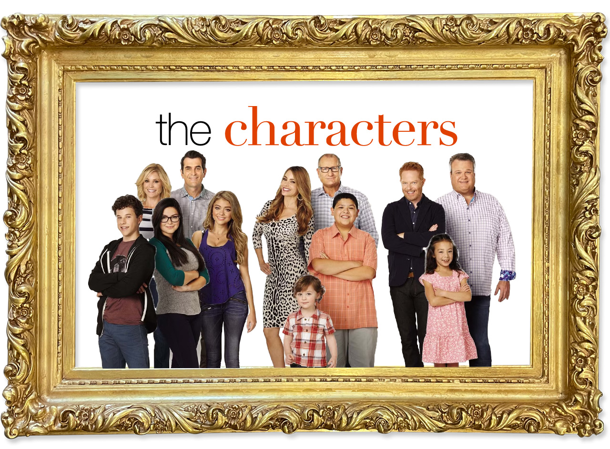
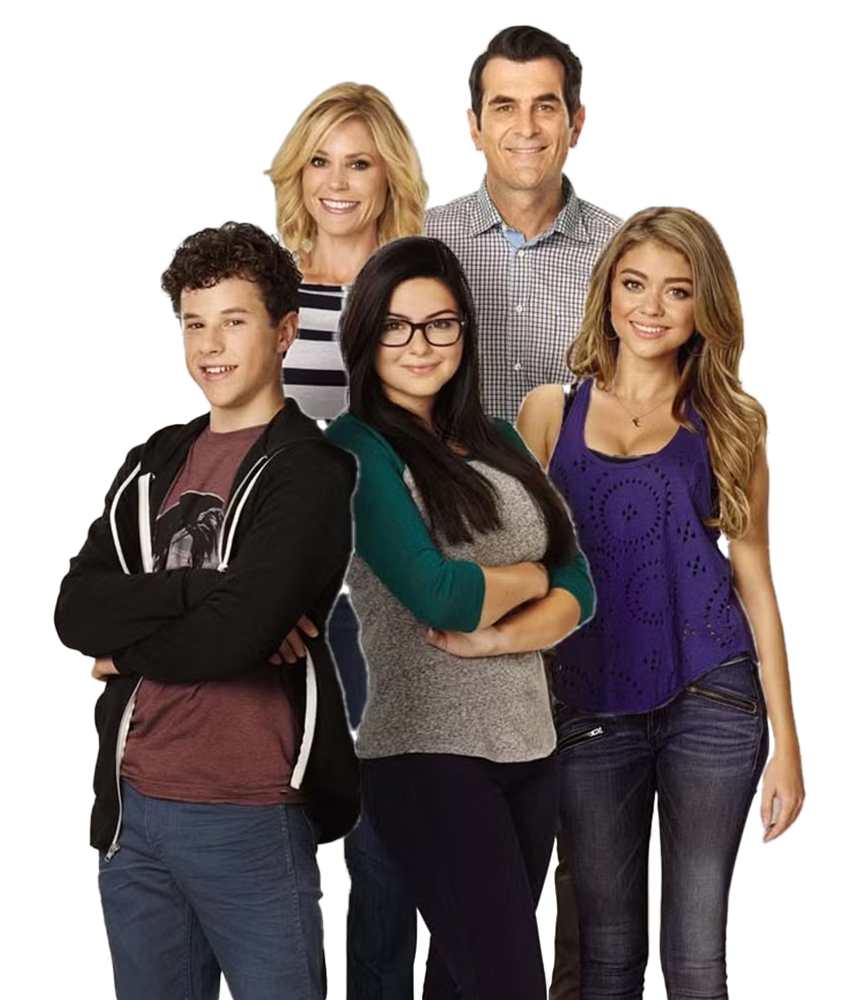
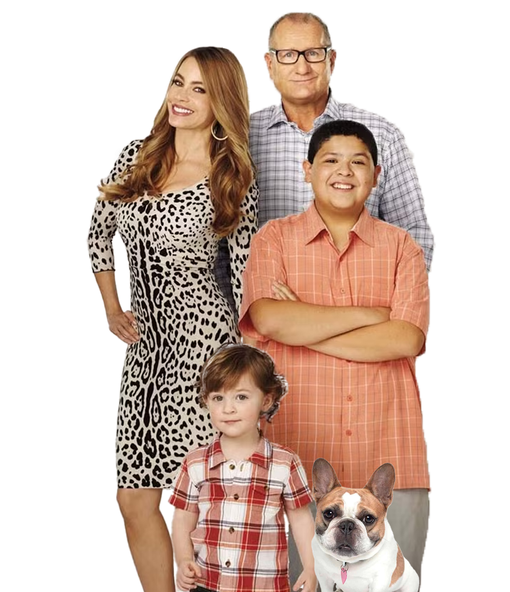
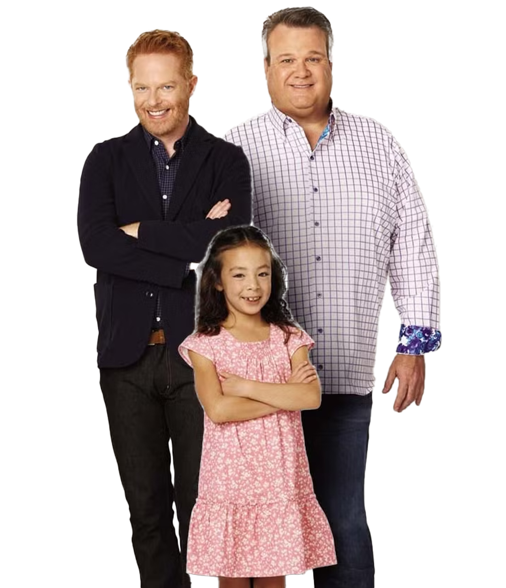
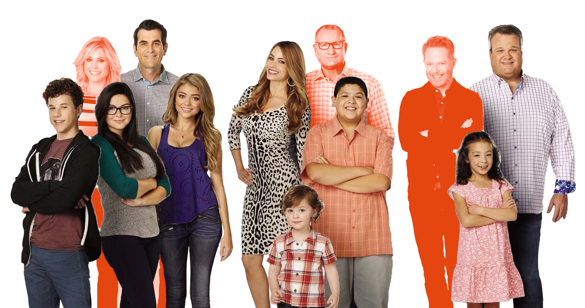
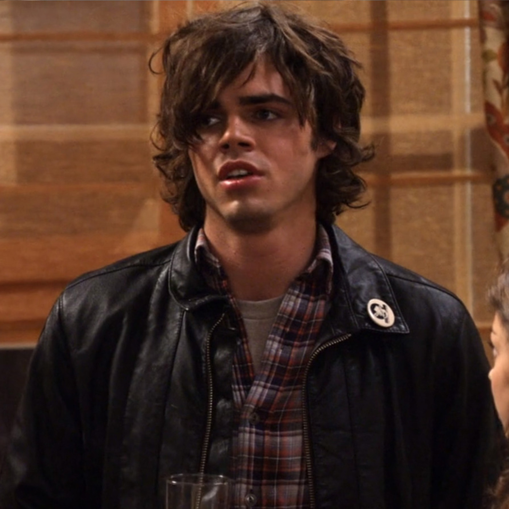
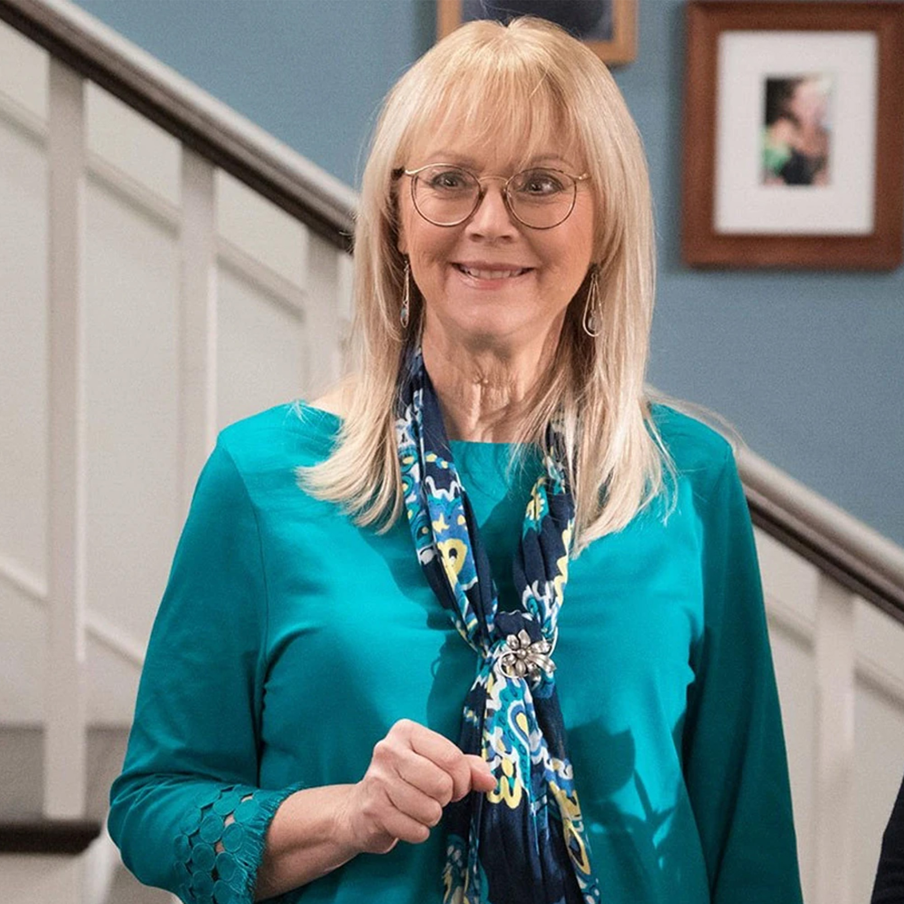
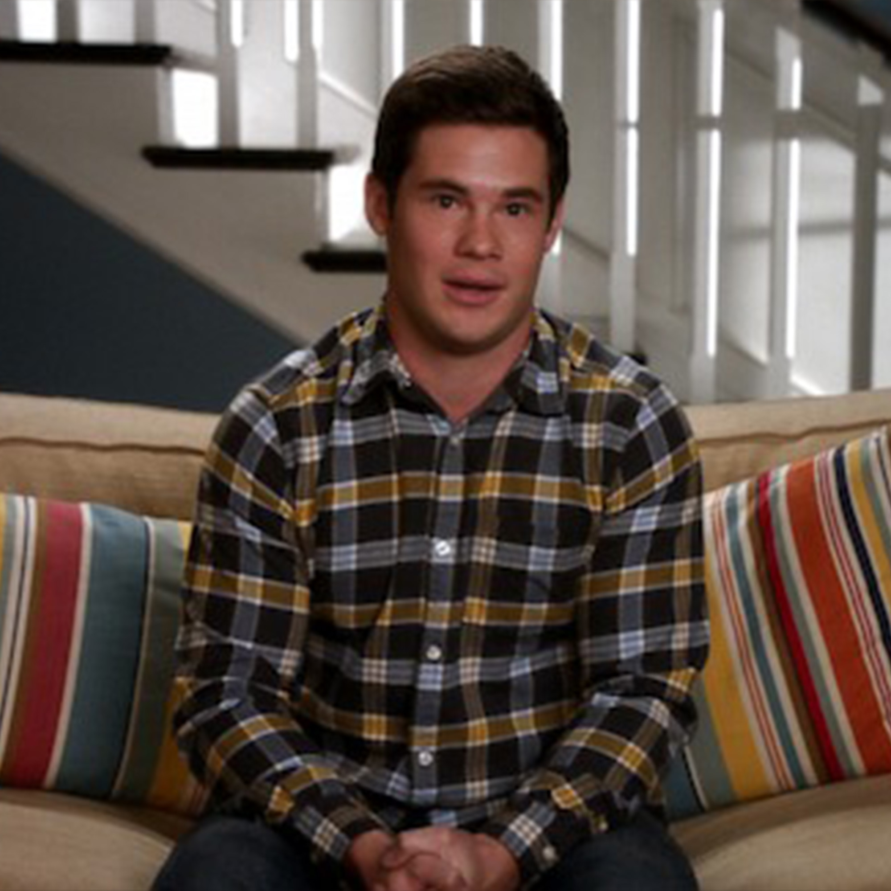

Click on each character's portrait to learn more!

the dunphy family is made up of Claire (Julie Bowen), her fun and sometimes clueless husband Phil (Ty Burrell), and their three kids, Haley (Sarah Hyland), Alex (Ariel Winter), and Luke (Nolan Gould). Haley is a rebellious teenager, Alex is the family genius, Luke is the silly little brother, following in the cluelessness of his father. Their home is busy and a little messy, but full of love and everyday family moments.
claire dunphy: played by Julie Bowen, Claire is the eldest of Jay (and Dede)’s children, and a highly organized, sometimes controlling mother and wife. She often balances her drive for perfection with a wry sense of humor, navigating the chaos of her family while trying to keep everyone in line.
phil dunphy:: played by Ty Burrell, Phil is Claire’s husband, a cheerful, goofy, and well-meaning father. He embraces a childlike enthusiasm for life, often trying (and failing) to be “cool” with his kids, and brings warmth and comic relief to the family dynamic.
haley dunphy: played by Sarah Hyland, Haley is the oldest Dunphy child, known for her social and outgoing personality. She’s trendy and sometimes self-absorbed, but over the series, she matures, showing more depth, empathy, and cleverness than she initially appears to have.
alex dunphy: played by Ariel Winter, Alex is the middle child in the Dunphy family. She’s known for being highly intelligent, driven, and often sarcastic. She sometimes feels out of place in her more easygoing family, which adds both humor and depth to her character.
luke dunphy: played by Nolan Gould, Luke is the youngest Dunphy sibling, often depicted as goofy, literal-minded, and hilariously clueless. Despite his lack of awareness, he occasionally surprises the family with moments of unexpected insight or creativity.

the pritchett family includes Jay (Ed O’Neill), a traditional dad, his much younger (second) wife Gloria (Sofia Vergara), and her son Manny (Rico Rodriguez). Gloria is a diva who adores luxury, and Manny is a sweet, perfectly-mannered gentleman. In later seasons, Gloria gives birth to her and Jay’s son, Joe (Jeremy Maguire). Jay’s dog, Stella, is also practically family. Together, they show the mix of different ages, cultures, and personalities living under the same roof.
jay pritchett: Played by Ed O’Neill, Jay is the patriarch of the Pritchett family. He’s a wealthy, no-nonsense businessman with a dry sense of humor, often struggling to connect with the younger, more unconventional members of his family.
gloria delgado pritchett: Played by Sofía Vergara, Gloria is Jay’s passionate and vivacious second wife. She’s fiercely protective of her family, charming, and sometimes quick-tempered, bringing humor and heart with her Colombian heritage and vibrant personality.
manny delgado: Played by Rico Rodriguez, Manny is Gloria’s son from a previous relationship. Mature beyond his years, sensitive, and romantic, he often provides humor through his dramatic, old-soul outlook on life.
joe pritchett: Played by Jeremy Maguire, Joe is the youngest child in Jay and Gloria’s family, as well as their only child together. He’s adorable, occasionally mischievous, and slowly developing his own distinct personality within the lively Pritchett household.
stella: Stella is Jay’s French Bulldog. Initially, Gloria wanted the dog and Jay didn't, but this reversed, and Stella became "Jay's best friend". She was known for being a troublemaker, destroying Gloria's shoes, and famously creating a pool emergency that forced Gloria to save her.

the tucker-pritchett family follows Mitchell (Jesse Tyler Ferguson) and Cameron “Cam” (Eric Stonestreet), a homosexual couple raising their sassy adopted daughter, Lily (Aubrey Anderson-Emmons). Mitchell is more serious, organized, and easily stressed, while Cameron is emotional, dramatic, and loves attention. Their relationship brings a mix of humor and emotion as they figure out parenting and life together.
mitchell pritchett: Played by Jesse Tyler Ferguson, Mitchell is a serious, organized, and sometimes anxious lawyer. He often worries about rules, appearances, and doing the “right thing,” which contrasts with his more dramatic partner, Cameron, creating both humor and heartfelt moments in their family life.
cameron “cam” tucker: Played by Eric Stonestreet, Cam is Mitchell’s husband and the more emotional, theatrical half of the couple. Outgoing, affectionate, and prone to dramatics, he loves attention and big gestures, often balancing Mitchell’s rigidity with humor, warmth, and unpredictability.
lily tucker-pritchett: Played by Aubrey Anderson-Emmons Lily is Mitchell and Cameron’s adopted daughter, known for her dry humor and blunt, often unexpected one-liners. As she grows up, she becomes more independent and observant, often poking fun at the adults around her.

jay pritchett is the father of eldest daughter claire (pritchett) dunphy and younger brother mitchell pritchett.This makes Jay and Gloria the children’s grandfather, but things get complicated when it comes to Jay’s wife Gloria. Despite being younger than Claire, Gloria is her and Mitchell’s step-mom. This also makes Manny, Gloria’s son from another man, an uncle to Haley, Alex, Luke, and Lily, even though he is around the same age as Luke. According to this logic, though not acknowledged, Joe is technically also an uncle to the kids, and brother in law to Phil and Cam.
these characters are regularly involved with the families, but not main characters

dylan marshall
haley’s on-and-off boyfriend and a recurring part of the dunphy family

dede pritchett
jay’s unpredictable ex-wife whose dramatic personality stirs up tension when she visits the family

andy bailey
phil’s kind, awkward assistant who becomes important to the dunphys especially through his relationship with haley